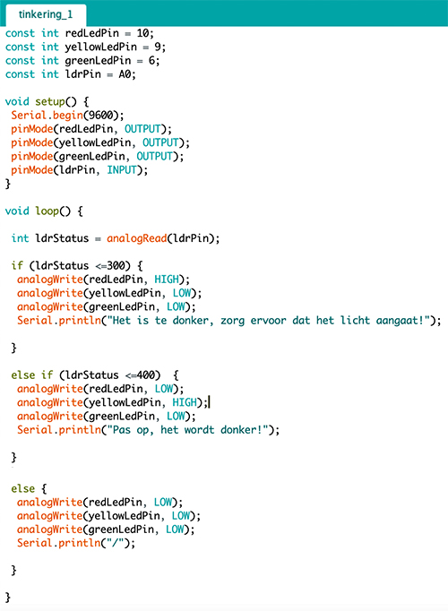
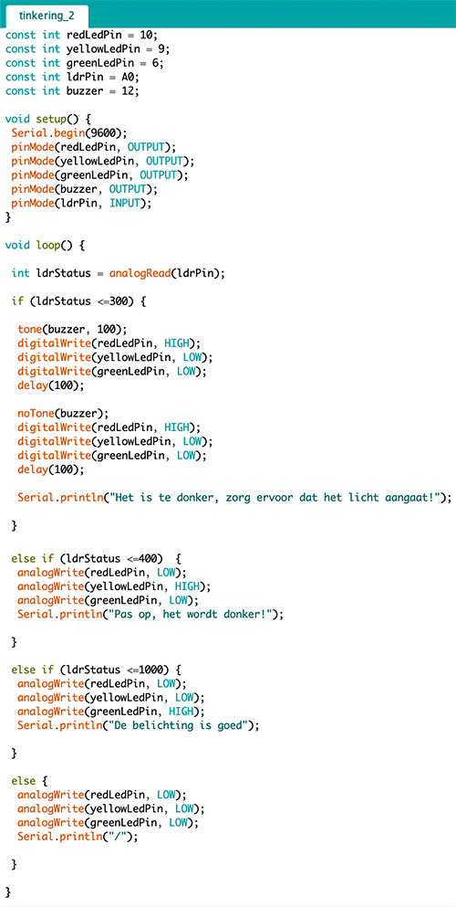
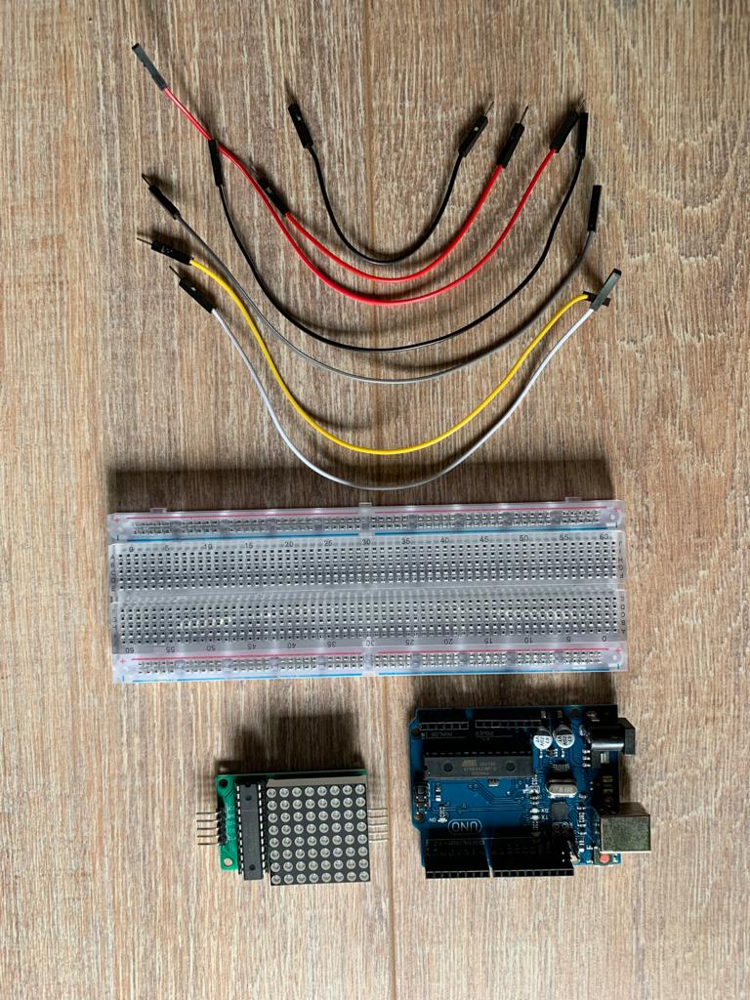

WEARABLE
CHALLENGE
TINKERING
Dit is het tinkering gedeelte van de challenge wearable. Ik heb hier 3 verschillende experimenten gedaan, waarvan 1 een gevolg is van een ander. Voor het eerste experiment heb ik een stoplicht gemaakt en bij het tweede experiment heb ik daar een zoemer bij toegevoegd die afgaat als het stoplicht rood werd. Het derde experiment is geïnspireerd door opdracht 7: LED Matrix. Ik heb een op zichzelf bewegende video gemaakt.
Experiment 1
Voor het eerste experiment koos ik ervoor om een stoplicht te maken. Tijdens de workshops vond ik het leuk om met LED lichtjes te werken en wilde daarom hiermee ook experimenteren. Ik had drie LED lichtjes, groen, geel, rood, in de volgorde van een stoplicht gezet.
Het stoplicht werkt via licht. Als de ruimte goed belicht is dan staat het groene LED lampje aan, als de ruimte matig belicht is dan gaat het gele LED lampje aan en als de ruimte slecht is belicht (dus heel erg donker) gaat het rode LED lichtje aan.
code
Experiment 2
Ik vond het twee experiment zo leuk om te doen en met het leren van de piezo speaker vond ik het leuk om die bij mijn stoplicht toe te voegen. In dit tweede experiment wilde ik de speaker af laten gaan op het moment dat het rode LED lichtje aanging. Daarnaast wilde ik het rode LED lichtje laten flikkeren en in de seriële monitor steeds een melding krijgen van de staat van LDR.
In het begin had ik hier veel moeite mee, omdat de speaker wel werkte en het groene/ gele lED lichtje, maar het rode LED lichtje ging niet aan. Deze ging pas aan als ik de speaker ontkoppelde. Na enige tijd kwam ik erachter dat ik de GND sensor 1 vakje naar beneden moest zetten en de speaker in het vakje waar de sensor eerst zat te steken.
code
Experiment 3
Met experiment wilde ik iets doen met de LED Matrix. Tijdens de workshop kregen we de opdracht om een bewegend plaatje te maken aan de hand van een potentiometer. Ik wilde het een stap verder nemen en proberen een kleine lichtvideo laten afspelen zonder dat dat er menselijke input van te pas zou komen. Hiervoor heb ik de potentiometer weggehaald en zo geprogrammeerd dat een video zou afspelen.
Video die laat zien hoe het werkt:
